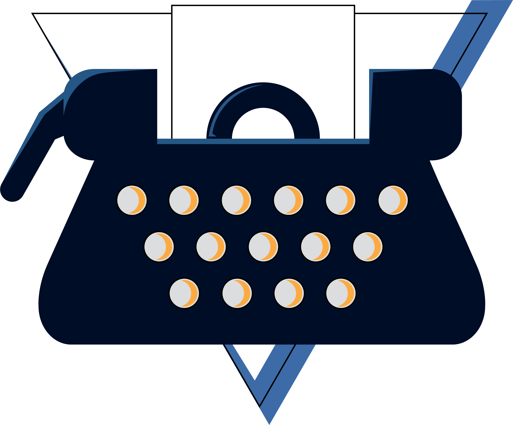
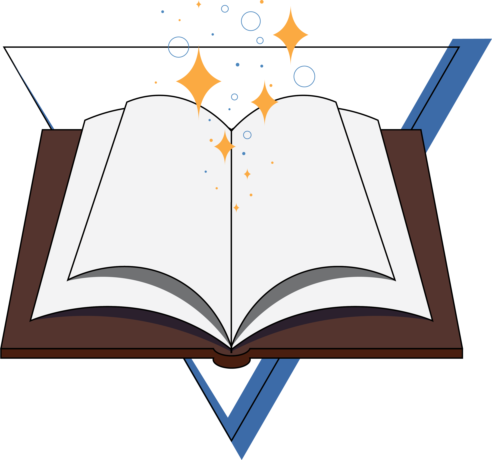
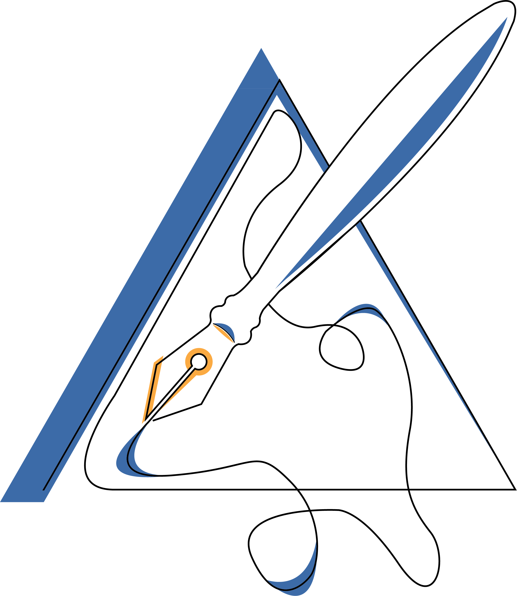
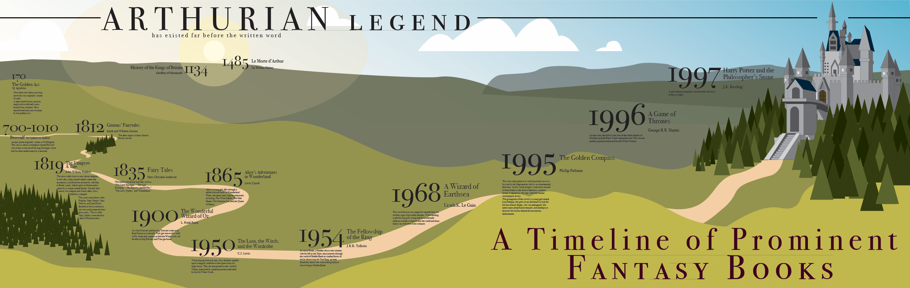
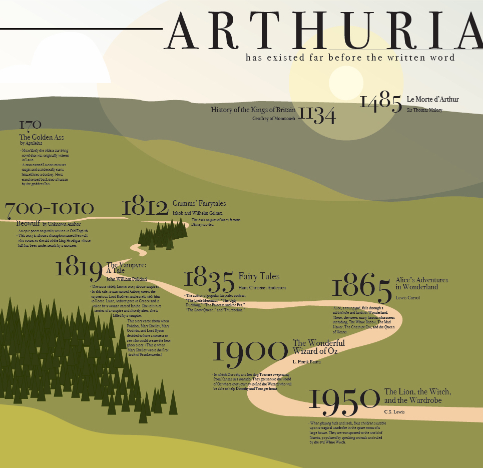
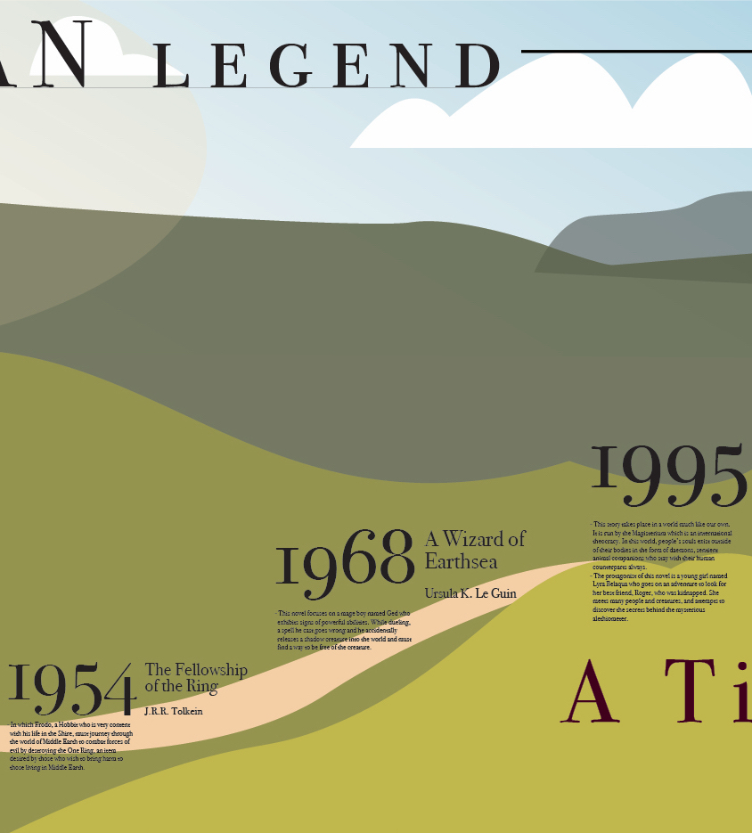
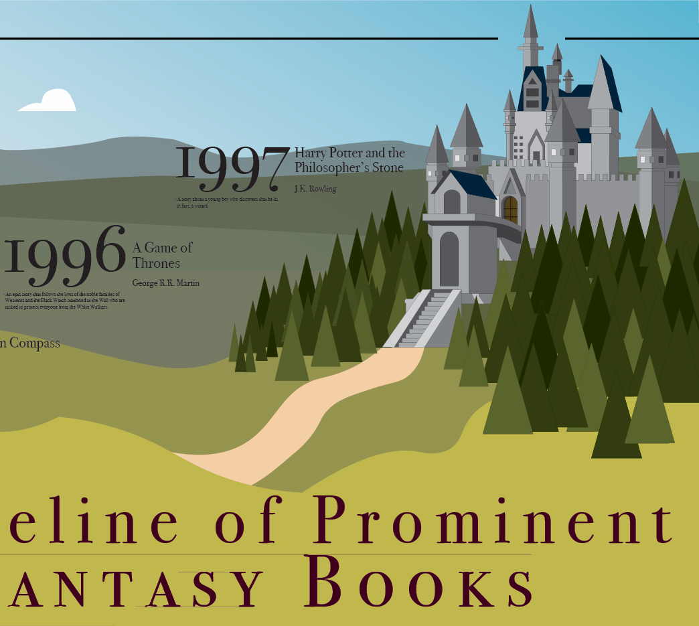

December 15, 2019
Icon Examples
These are some icons I created in my very first college Software class.



December 6, 2019
Software II Project 4: Timeline

For this project, we had to create a timeline for anything we wanted. As an avid reader, I knew right away that I wanted to make a timeline for fantasy books. I first created a list of prominent fantasy books written throughout history and then narrowed it down, which was very difficult to do. The main problem I had with this was coming up with a design for the timeline. I tried two different things which I really did not like, and finally decided to create a castle in Adobe Illustrator which then led to the current design which I am very happy with!



November 4, 2019
Software II Project 3: Article Illustrations:
For my three articles, I knew before I started looking for them that I wanted to use articles that had to do with issues I am passionate about. I also knew that, for my actual illustrations, I wanted to work with real pictures as well as vector images.
First Article:
For the first article, I chose one that had to do with the dangers of vaping and how we as a society should be helping young people quit. The article mentions how there is a perception that vaping is safe—atleast safer than cigarettes—so I wanted the illustration to be a little fun and whimsical while also portraying the real danger. To do this, I made the vapor curling and colorful, then incorporated a skull and crossbones that wouldn't be the first thing you notice when you look at the illustration.
As Sea Levels Rise, So Do Ghost Forests
For the second article, I wanted to do something related to climate change and found this article about Ghost Forests. I didn't know anything about Ghost Forests so this article was really informative and also gave me a good idea for an illustration. First, I thought I would try to make a forest growing more and more transparent, but once I started experimenting, I realized it wasn't going to work out well. Instead, I decided to take the name 'Ghost Forest' literally. I chose a photo of a dark wood and added more trees. I made these trees lighter and lowered the opacity so that they would look ghostly. I also added the picture of a girl and did the same thing to it that I did to the trees. To keep the whimsical style, I created some cute ghosts in Illustrator
Third Article:
First All-Female Spacewalk Is Back On, NASA Says
For the last article, I chose one about the all-female spacewalk. They set off on October 21st! The biggest difficulty for this illustration was figuring out how to make the viewer know that the illustration was for an all-female spacewalk. I knew I didn't want to use stereotypical 'female' colors, so, instead, I used the female symbol. I made the symbol and the astronaut in Illustrator and the rest in Photoshop. I decided to position the symbol around the astronaut and have the astronaut almost floating through it to help draw your eye to both.
October 6, 2019
Software II Project 2: Scalable Icons
In this project, we focused not only on creating three icons that go together, but also on making icons that would look good scaled very big and very small. We had to make the icons colored and in back and white. For each version, we had to resize and rework each icon to look good in three sizes: 128 pixels, 64 pixels, and 32 pixels. When I was trying to come up with ideas for my icons, I thought about stuff I liked and stuff I enjoyed doing. I also decided to use a circle as my main, unifying shape. And, with that, I came up with the following:
I love writing, so I knew that I wanted to do something with that. I sketched many different writing implements such as a laptop, a typewriter, a notebook, and a hand holding a pen. I decided to go with a quill and paper because I thought it looked elegant and I also really like how the paper and quill could stick out of the circle.
For the next icon, I decided to focus on a place I enjoy going to. Every summer, my family and other families we’re friends with go to the Outer Banks, North Carolina for a week. I always look forward to this trip so I wanted to find a way to represent it for this project. I knew I wanted to include sand, water, the sun, and an umbrella, but I wasn’t sure if I should add anything else. I played around with putting either a chair or a beach towel under the umbrella, however, it began to look too busy. Once I decided on what the components of the icon would be, I had to choose colors for it. I easily found a blue and a sandy color that I liked; the sun would be yellow. But I didn’t know what color to make the umbrella and the sky. For the sky, I thought it would be interesting to leave the space transparent so that it could become any color the icon is in front of. The sky at the beach is always pretty, especially during sunrise and sunset so I thought the dynamic element caused by keeping the ‘sky’ transparent would make the icon better!
My final icon is my favorite. I decided to represent my love of Scotland because I studied abroad there in the fall semester of 2018. The white cross with the blue background is for the Scottish flag. And the thistle is the national flower of Scotland. I found an image online for the flag and used the eyedropper tool to find the correct color blue. However, I thought it wouldn’t let the thistle stand out so I decided to lighten it a little. For the thistle, I found a photograph of one of the plants and used it as a reference when creating the vector image on Illustrator. I also used the eyedropper tool on the photograph of the flower to find the proper pinks and purples.
When it came to making the icons black and white, the only one I struggled with was the thistle. I wanted to keep the cross in the background but only being able to work with two colors meant that some part of the thistle would blend in with the background. So, what I ended up doing was making the background all black and the thistle white with an outline. Though, I still wish there was a way to keep the Scottish flag aspect in this version, I am happy with how it came out!
September 5, 2019
Software II Project 1: Isometric Avatar
For this first project, I used Adobe Illustrator and an isometric grid to make an avatar of myself. The most challenging part was figuring out how to make the avatar look good while still fitting to the isometric grid. Once I figured that out, I began thinking about the details I wanted my avatar to have. I wanted her to have short hair, like I do currently. I also wanted her to be interacting with something writing-related because writing is one of my passions. I decided to have her leaning on a giant fountain pen and I really like how she came out!